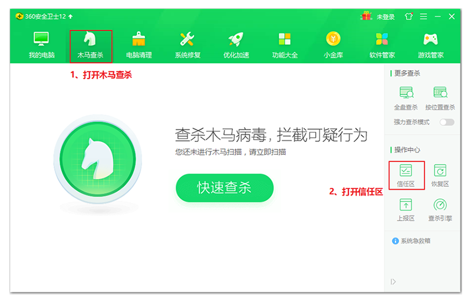
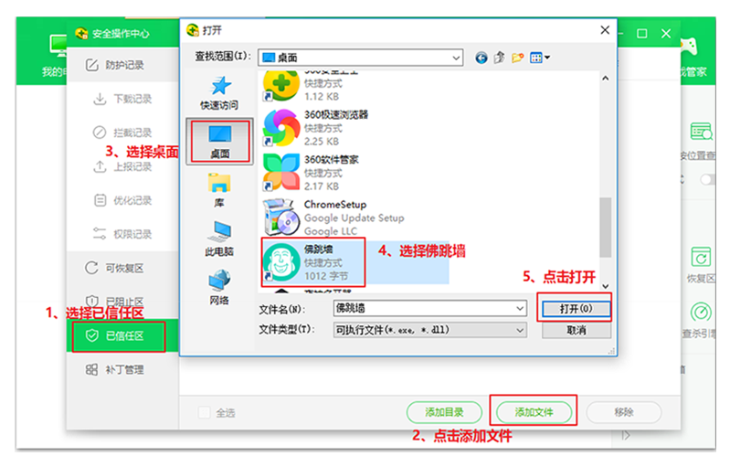
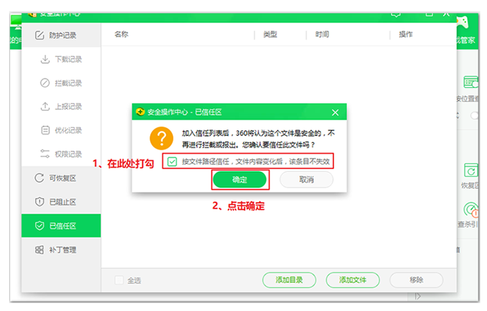
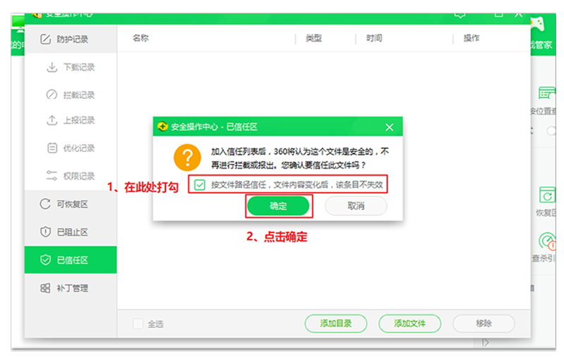
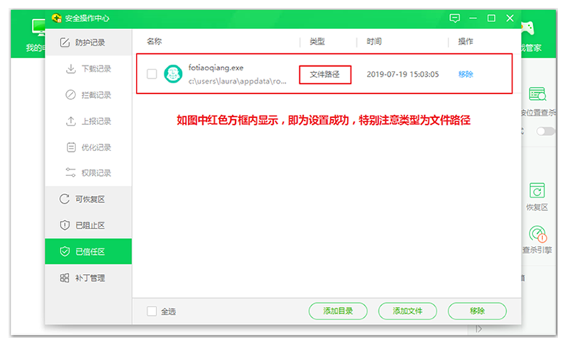
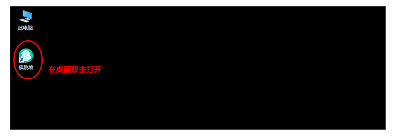
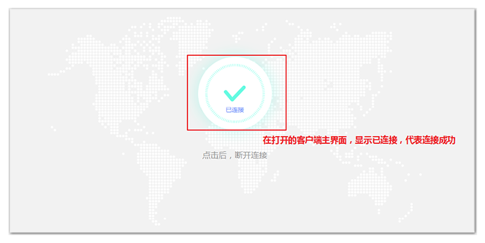

Ares客户端360拦截问题解决办法
360教程说明：Ares软件绝对无毒，无内置广告，从所周知360软件对所有未在360进行“信息”登记的都会触发拦截。而VPN软件由于类型特殊，是不可能通过360的【信息登记】。
*重要提示：【如果没有完成本教程的设置，Ares软件无法正常使用】，在使用Ares软件前，我们先花1分钟按照以下流程完成设置。在做完以下设置前，请不要打开Area软件，避免360拦截，导致无法正常使用。
1、我们先打开360安全卫士，找到《木马查杀》，点击《信任区》选项。（如下图）
2、在360信任区里，点击《添加文件》选择桌面找到Ares快捷键方式图标点击打开（如下图所示）
3、先勾选“按文件路径信任，文件内容变化后，该条目不失效”再点击确定（如下图）
4、点击确认后，ares.exe文件就已经添加至您的信任区，完成操作。
按照以上操作设置完成后，我们开始使用《Ares》软件，检查一下是否能正常使用。
5、我们在桌面双击打开《Ares》
6、顺利打开界面，没有遇到任何360拦截；在打开的界面中，显示已连接，就代表我们翻墙成功啦。
太好了，您现在已经可以翻墙啦，赶紧去体验吧！
